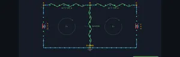

Kirchhoff’s Law Calculator — KCL & KVL
KCL • KVL • Mesh Analysis • Node Voltages • Power — Simulate • Explore • Practice • Quiz
3D Model — Circuits: KCL & KVL Solver
Interactive 3D model of this apparatus. Pick a component on the right, then drag to rotate · scroll to zoom · right-drag to pan.
Display Controls
Σ Live equations — KVL system solved for the current values
1 Overview
The Kirchhoff’s Circuit Solver is an interactive tool for analysing multi-loop DC circuits using Kirchhoff’s Current Law (KCL) and Kirchhoff’s Voltage Law (KVL). You can build 2-loop and 3-loop circuits with multiple voltage sources and resistors, then visualise mesh currents, node voltages, branch currents, and power dissipation across every component. The solver automatically writes and solves the system of KVL equations using matrix methods.
This tool is designed for electrical engineering students learning loop analysis and node voltage methods, physics students studying DC network theorems, and engineering trainees practising circuit analysis techniques like superposition and mesh current methods.
2 Building the Circuit

The simulator opens in Simulate mode with an H-Bridge circuit: V1 = 12 V, V2 = 8 V, R1 = 100 Ω, R2 = 200 Ω, R3 = 150 Ω. To begin:
- Select a Circuit Preset: H-Bridge (2 loops, 2 sources), T-Network, Ladder, or 3-Loop (3 sources, up to 5 resistors).
- Drag the V1 and V2 sliders (1–24 V), or type an exact value into the stepper box beside each slider and press Enter.
- Adjust R1, R2, R3 sliders (10–1000 Ω) to set resistor values. Additional R4, R5, and V3 sliders appear for the 3-Loop topology.
- Toggle Show Mesh Currents, Show Node Voltages, and Show Power to overlay different analysis views on the canvas.
3 Energising the Circuit
Simulate mode is the main interactive solver workspace. The canvas shows the circuit schematic with animated current flow, mesh current loops, node voltage labels, and heat-glow power indicators on resistors. Key controls:
- Circuit Preset pills: H-Bridge is a classic 2-mesh circuit with a shared resistor R2. T-Network rearranges the same components into a T-shape. Ladder draws the identical 2-mesh network in a flat two-rail ladder layout (handy for comparing schematic styles). 3-Loop adds V3, R4, and R5 for a true 3×3 mesh analysis.
- V1, V2, V3 sliders: Set voltage source values. The solver uses KVL around each mesh: e.g., V1 = I1×R1 + (I1−I2)×R2 for mesh 1.
- R1–R5 sliders: Set resistor values. The branch current through a shared resistor (e.g., R2) equals the difference of the two mesh currents: IR2 = I1 − I2.
- Show Mesh Currents: Overlays circular arrow indicators for each mesh current direction and magnitude.
- Show Node Voltages: Displays voltage potential at each node relative to ground.
- Show Power: Highlights each resistor with a heat glow proportional to P = I²R.
Readout cards display: mesh currents (I1, I2, I3), branch current through the shared resistor (IR2), node voltage at junction B, and individual and total power dissipation in milliwatts.
4 Circuit Theory
Explore mode presents circuit analysis theory in two categories:
- Laws: Covers KCL (sum of currents at a node is zero — charge conservation), KVL (sum of voltage drops around any closed loop is zero — energy conservation), and Ohm’s Law as applied within network analysis.
- Methods: Explains mesh analysis (assign loop currents, write KVL equations, solve the linear system), node voltage method (assign node potentials, write KCL equations), superposition (analyse one source at a time), and Thevenin/Norton equivalents.
Each concept includes formulas, worked examples, and an interactive canvas illustration.
5 Try a Problem
Practice mode generates problems such as: “In an H-bridge with V1 = 10 V, V2 = 5 V, R1 = 100 Ω, R2 = 200 Ω, R3 = 150 Ω, find the mesh current I1”, “Calculate the voltage at node B”, or “Find the power dissipated in R2.” Enter your answer and receive step-by-step feedback showing the KVL equations and matrix solution.
Quiz mode tests your knowledge with 15 multiple-choice questions covering KCL, KVL, mesh analysis setup, branch current calculation, node voltage method, and power distribution. Review your results and detailed explanations at the end.
6 Tools, Export & Keyboard Shortcuts
Beyond the sliders, the solver includes several productivity and study features:
- Stepper inputs: Every slider has a companion [−] [value] [+] stepper. Type an exact value (e.g. R1 = 333 Ω) and press Enter, or nudge with the buttons. The slider and stepper stay in sync.
- Show Calculations: Click the Show Calculations button on the circuit canvas to open a step-by-step modal. It rebuilds every time from the current values, showing the KVL mesh equations, the determinant, Cramer’s-rule solution for each mesh current, the shared branch current, node voltage, and power — all typeset in classical mathematical notation (rendered with KaTeX). Press Escape or click outside to close.
- Live equations panel: The collapsible Learning panel below the controls shows the live KVL system with your current values substituted and the solved currents updating in real time. Use Expand all / Collapse all to manage it.
- Export CSV: The Export CSV button downloads all source values, mesh and branch currents, node voltage, and power figures as a spreadsheet-ready file.
- Export PNG: The Export PNG button (also on the right-click menu) saves a watermarked image of the current circuit diagram.
- Right-click menu: Right-click the circuit canvas for quick actions — Export PNG, Copy Values (copies the results to your clipboard), Toggle Grid (a reference grid overlay), and Reset Circuit.
- Reset: The Reset button restores the default H-Bridge circuit and all toggles.
7 Tips & Best Practices
- Start with the H-Bridge preset (2 loops) to understand the basic mesh analysis workflow before moving to 3-loop circuits.
- When writing KVL equations, always follow a consistent direction (clockwise) around each mesh. Voltage rises across sources and drops across resistors.
- The branch current through a shared resistor equals the algebraic difference of the two mesh currents. If the result is negative, current flows opposite to the assumed direction.
- Verify your solutions using power conservation: the total power delivered by all sources must equal the total power dissipated in all resistors.
- Try setting V2 = 0 (short circuit the second source) to see superposition in action — only V1 drives current.
- Enable the Power overlay to identify which resistor dissipates the most energy. The heat glow gives an intuitive visual for I²R losses.
- For the 3-Loop preset, the matrix becomes 3×3. The simulator solves it instantly, but practise writing the equations by hand first, then verify against the readouts.
Kirchhoff’s Circuit Laws — Free Interactive Multi-Loop DC Circuit Solver

Kirchhoff’s laws are the foundation of electrical circuit analysis. Kirchhoff’s Current Law (KCL) states that the total current entering any junction equals the total current leaving it — a consequence of charge conservation. Kirchhoff’s Voltage Law (KVL) states that the sum of all voltage drops around any closed loop equals zero — reflecting energy conservation. Together, KCL and KVL allow engineers to analyze circuits of arbitrary complexity by writing and solving systems of linear equations. Our interactive simulator lets you build 2-loop and 3-loop DC circuits with multiple voltage sources and resistors, then visualize mesh currents, node voltages, and power dissipation in real time.
Mesh Analysis — Solving Multi-Loop Circuits
Mesh analysis (also called loop analysis) is a systematic method for solving planar circuits. You assign a mesh current to each independent loop, then apply KVL around each mesh. For a 2-loop H-bridge circuit with voltage sources V1 and V2 and resistors R1, R2, R3, the equations are: V1 = I1×R1 + (I1−I2)×R2 and V2 = I2×R3 + (I2−I1)×R2. This gives a 2×2 system that can be solved using Cramer’s rule or matrix methods. The branch current through the shared resistor R2 is simply I_R2 = I1 − I2. This simulator solves the system automatically and shows how mesh currents relate to branch currents.
Node Voltage Method & Superposition
The node voltage method assigns a voltage variable to each non-reference node and writes KCL equations. It is particularly efficient when a circuit has fewer nodes than meshes. Superposition analyzes multi-source circuits by considering one source at a time (deactivating others) and summing individual contributions. Both methods are equivalent to mesh analysis and produce identical results. Our simulator demonstrates these concepts through visual overlays showing node potentials and current flow directions.
Power Dissipation in Multi-Loop Circuits
Each resistor in a circuit dissipates power as heat, calculated as P = I²R where I is the actual branch current through that resistor. In multi-loop circuits, the branch current may be the difference of two mesh currents if the branch is shared between loops. The total power delivered by all sources equals the total power dissipated across all resistors — conservation of energy. Our simulator displays a heat glow on each resistor proportional to its power dissipation, giving an intuitive visual representation of energy distribution.
Mesh vs Nodal — Which Method to Choose
The two methods give identical answers but with different effort. The rule of thumb every electrical-engineering undergraduate learns: count meshes vs count nodes, pick the smaller count.
- Mesh analysis wins when there are few loops. A 2-loop circuit gives a 2-equation system regardless of how many components. Quick to solve by hand.
- Nodal analysis wins when there are few nodes. A circuit with 3 nodes and 6 meshes is much faster with 2 nodal equations than 6 mesh equations.
- Mixed approaches. Real engineers often use mesh for the “dense” parts of a circuit and nodal for the “sparse” parts, picking up the smaller equation count in each region.
A 2-Loop Worked Example
Take a circuit with two voltage sources V1 = 12 V and V2 = 6 V, three resistors R1 = 2 Ω, R2 = 3 Ω (shared between loops), R3 = 4 Ω. Solve for mesh currents I1 and I2.
| Step | Equation | Working |
|---|---|---|
| Mesh 1 KVL | V1 = I1R1 + (I1−I2)R2 | 12 = 2I1 + 3(I1−I2) = 5I1 − 3I2 |
| Mesh 2 KVL | V2 = I2R3 + (I2−I1)R2 | 6 = 4I2 + 3(I2−I1) = −3I1 + 7I2 |
| Solve by Cramer’s rule | det = 5×7 − (−3)×(−3) = 26 | I1 = (12×7 + 3×6)/26 = 102/26 = 3.92 A |
| — | — | I2 = (5×6 + 3×12)/26 = 66/26 = 2.54 A |
| Branch current through R2 | IR2 = I1 − I2 | 3.92 − 2.54 = 1.38 A |
Total power dissipated: I1²R1 + IR2²R2 + I2²R3 = 30.7 + 5.7 + 25.8 = 62.2 W. Total power delivered by sources: V1I1 + V2I2 = 47.0 + 15.2 = 62.2 W. Conservation of energy checks out.
References
- Hayt, W. H., Kemmerly, J. E. & Durbin, S. M. — Engineering Circuit Analysis, 9th ed.
- Nilsson, J. W. & Riedel, S. A. — Electric Circuits, 11th ed.
- Kirchhoff, G. (1845) — Über den Durchgang eines elektrischen Stromes durch eine Ebene. Annalen der Physik. The original paper.
Explore Related Simulators
If you found this Kirchhoff’s circuit solver helpful, explore our Ohm’s Law simulator, RC Circuit simulator, Wheatstone Bridge simulator, Transformer simulator, and Resistor Color Code Calculator for more hands-on electrical engineering practice.